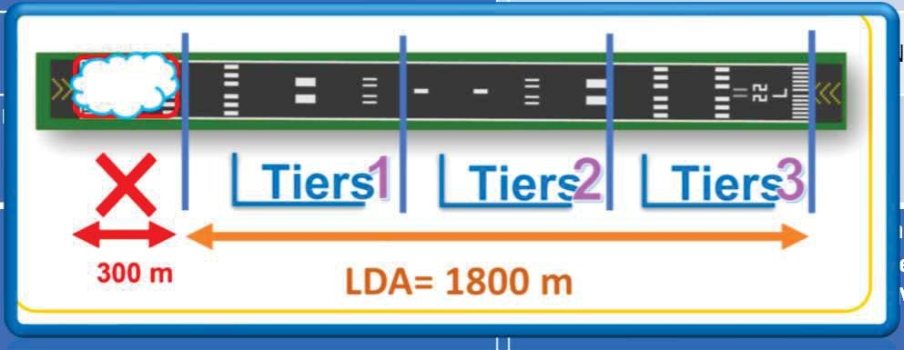
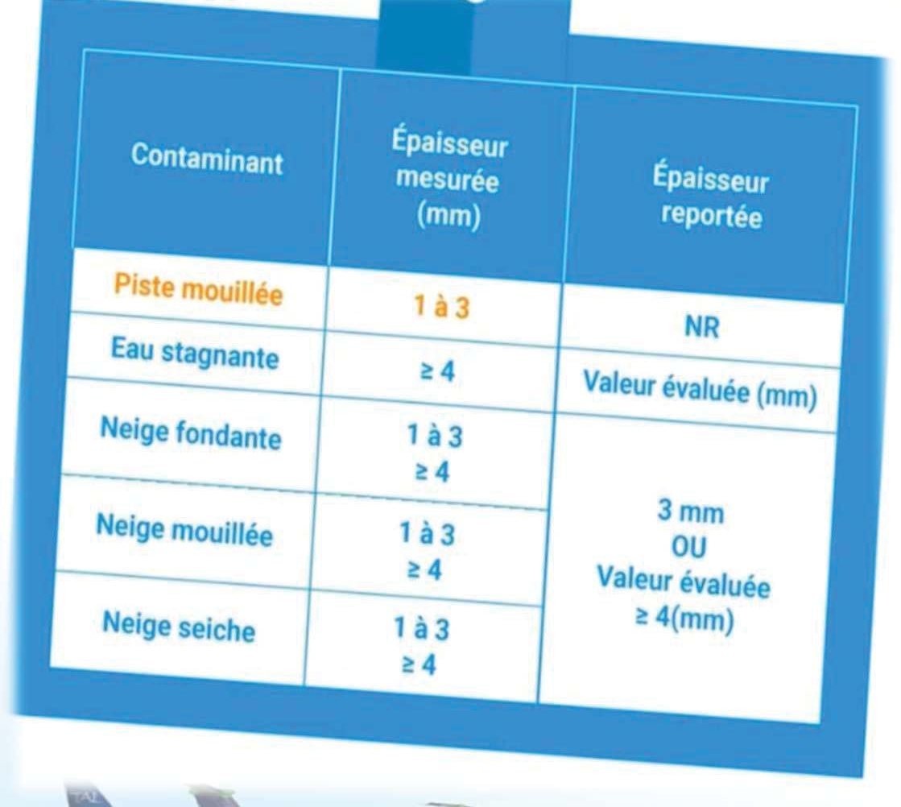
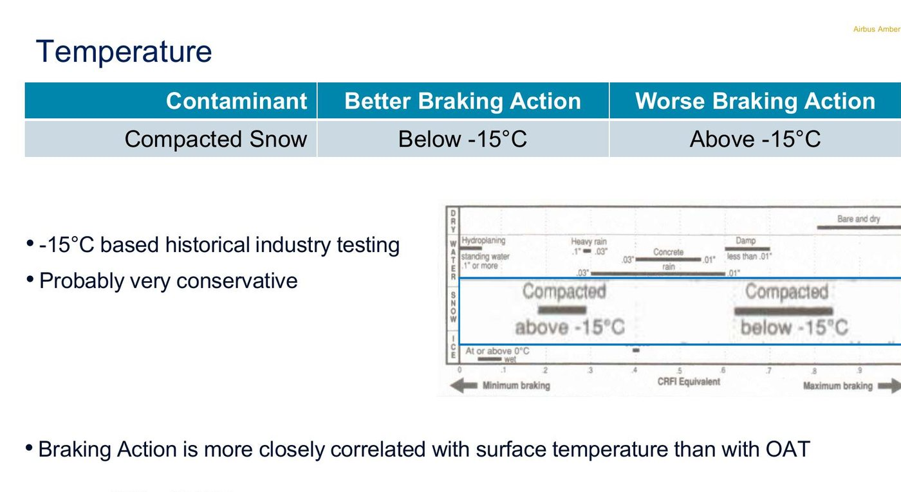

Lesson 05: Applying the RCAM — Thirds, Coverage, Depth and Temperature
Learning objectives
- Define the runway thirds, including displaced thresholds and reduced length or width.
- Apply the 10 % and 25 % coverage criteria and the reported coverage values.
- Apply the 3 mm depth threshold and the −15 °C criterion.

Why runway thirds?
Information is collected per third to decide whether the matrix applies and to let pilots prepare for braking and directional control in each part of the runway.
- The thirds are based on the runway length available for the take-off run (TORA); stopways, clearways and displaced thresholds are not considered.
- The first third starts at the end with the lower runway designator (for runway 08/26, at the beginning of 08, even if 26 is in use).
- If part of the length or width is declared unusable, the thirds and the coverage are assessed on the usable part only.

Is the runway contaminated?
Tap a card to turn it over.
Reported coverage

Depth
The depth is measured precisely enough to know whether the 3 mm threshold is crossed — not to the millimetre. Below 3 mm a fluid contaminant drains from the tyre footprint (no dynamic aquaplaning); above 3 mm the runway is contaminated and aquaplaning becomes possible. Dry and wet snow use the same 3 mm threshold.

Temperature
Compacted snow is RWYCC 4 at −15 °C or colder, RWYCC 3 above. The −15 °C value comes from historical industry testing and is probably conservative; braking action correlates better with the surface temperature than with the OAT.

When several contaminants are found, all of them are recorded in the inspection report; the RCR reports the descriptor(s) for each third.
Key takeaways
- Thirds on the TORA, starting from the lower runway designator; usable part only.
- < 10 % → NR, RWYCC 6; 10–25 % → coverage 25, RWYCC 6; > 25 % → RCAM.
- 3 mm threshold for depth; compacted snow −15 °C.
Knowledge check
Runway 04/22 with TORA 3,000 m (RWY 04 ASDA 3,100 m). Which length defines the thirds?
- 3,100 m
- 3,000 m (TORA)
- 3,100 m for 04 and 3,000 m for 22
- LDA only
Answer: B. The thirds are defined on the TORA; stopways and clearways are not used.